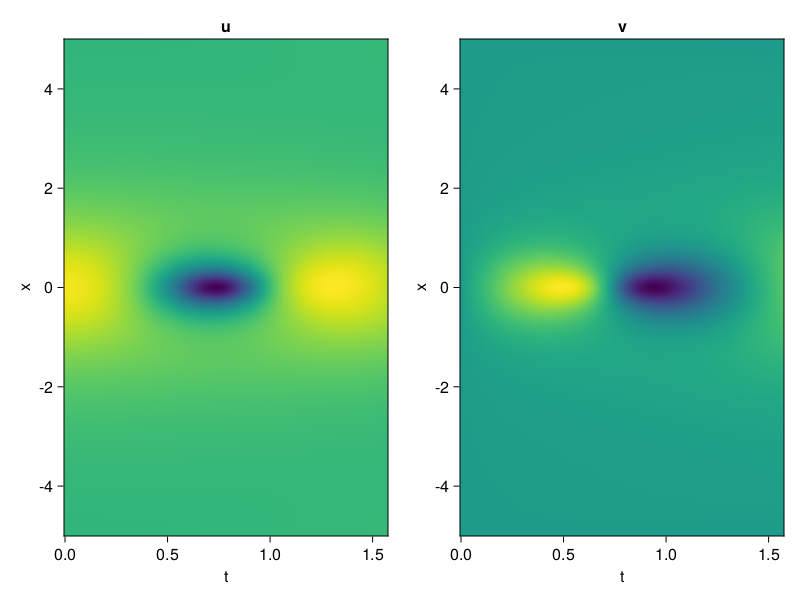
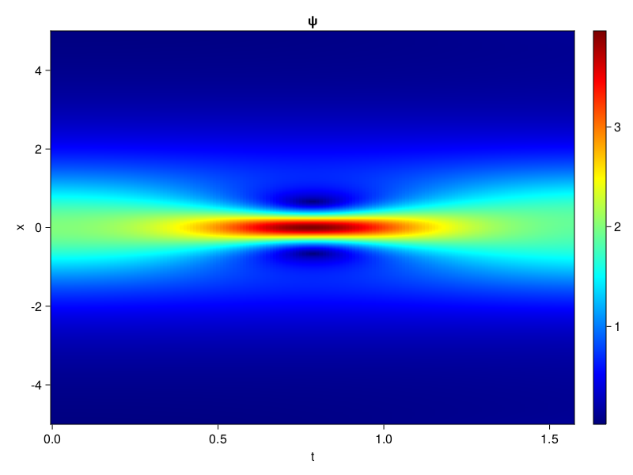
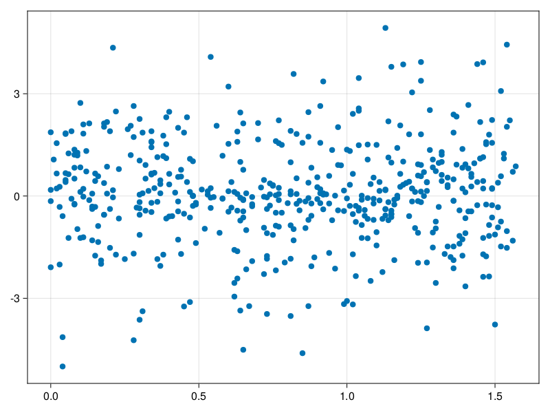

Schrödinger equation
The nonlinear Shrödinger equation is given by
\[\mathrm{i} \partial_t \psi=-\frac{1}{2} \sigma \partial_{x x} \psi-\beta|\psi|^2 \psi\]
Let $\sigma=\beta=1, \psi=u+v i$, the equation can be transformed into a system of partial differential equations
using ModelingToolkit, IntervalSets, Sophon, CairoMakie
using Optimization, OptimizationOptimJL
@parameters x,t
@variables u(..), v(..)
Dₜ = Differential(t)
Dₓ² = Differential(x)^2
eqs=[Dₜ(u(x,t)) ~ -Dₓ²(v(x,t))/2 - (abs2(v(x,t)) + abs2(u(x,t))) * v(x,t),
Dₜ(v(x,t)) ~ Dₓ²(u(x,t))/2 + (abs2(v(x,t)) + abs2(u(x,t))) * u(x,t)]
bcs = [u(x, 0.0) ~ 2sech(x),
v(x, 0.0) ~ 0.0,
u(-5.0, t) ~ u(5.0, t),
v(-5.0, t) ~ v(5.0, t)]
domains = [x ∈ Interval(-5.0, 5.0),
t ∈ Interval(0.0, π/2)]
@named pde_system = PDESystem(eqs, bcs, domains, [x,t], [u(x,t),v(x,t)])\[ \begin{align} \frac{\mathrm{d}}{\mathrm{d}t} u\left( x, t \right) =& - \frac{1}{2} \frac{\mathrm{d}}{\mathrm{d}x} \frac{\mathrm{d}}{\mathrm{d}x} v\left( x, t \right) - \left( \left|u\left( x, t \right)\right|^{2} + \left|v\left( x, t \right)\right|^{2} \right) v\left( x, t \right) \\ \frac{\mathrm{d}}{\mathrm{d}t} v\left( x, t \right) =& \frac{1}{2} \frac{\mathrm{d}}{\mathrm{d}x} \frac{\mathrm{d}}{\mathrm{d}x} u\left( x, t \right) + \left( \left|u\left( x, t \right)\right|^{2} + \left|v\left( x, t \right)\right|^{2} \right) u\left( x, t \right) \end{align} \]
pinn = PINN(u = Siren(2,1; hidden_dims=16,num_layers=4, omega = 1.0),
v = Siren(2,1; hidden_dims=16,num_layers=4, omega = 1.0))
sampler = QuasiRandomSampler(500, (200,200,20,20))
strategy = NonAdaptiveTraining(1,(10,10,1,1))
prob = Sophon.discretize(pde_system, pinn, sampler, strategy)OptimizationProblem. In-place: true
u0: ComponentVector{Float64}(u = (layer_1 = (weight = [0.30296605825424194 0.3472464680671692; -0.42020338773727417 0.17470544576644897; … ; -0.3894132971763611 -0.3037850856781006; 0.351767897605896 0.2645232677459717], bias = [0.0; 0.0; … ; 0.0; 0.0;;]), layer_2 = (weight = [0.4098392128944397 -0.03817195072770119 … -0.0009814914083108306 -0.30660632252693176; 0.5798165202140808 0.4741000831127167 … 0.3791748583316803 -0.5911493897438049; … ; -0.12640215456485748 -0.06381884217262268 … -0.14785538613796234 -0.07349410653114319; -0.3489551246166229 -0.5291677713394165 … -0.09085895121097565 0.029538694769144058], bias = [0.0; 0.0; … ; 0.0; 0.0;;]), layer_3 = (weight = [0.40548086166381836 -0.10993886739015579 … -0.576999843120575 0.37905097007751465; -0.21099817752838135 -0.017758607864379883 … -0.21725212037563324 0.15535968542099; … ; 0.25644826889038086 -0.2637456953525543 … -0.5807621479034424 -0.35467150807380676; -0.5733520984649658 -0.03131837397813797 … 0.14028772711753845 0.3647031784057617], bias = [0.0; 0.0; … ; 0.0; 0.0;;]), layer_4 = (weight = [-0.33652016520500183 0.22237960994243622 … 0.484609454870224 -0.24317233264446259; -0.5145393013954163 0.30575302243232727 … 0.40035492181777954 0.4633219242095947; … ; 0.35226279497146606 0.531890332698822 … -0.5557596683502197 0.16310825943946838; 0.2700417637825012 -0.5759004354476929 … 0.39805868268013 -0.07774630934000015], bias = [0.0; 0.0; … ; 0.0; 0.0;;]), layer_5 = (weight = [0.11720000207424164 -0.11546609550714493 … -0.5911480188369751 0.35999324917793274], bias = [0.0;;])), v = (layer_1 = (weight = [0.20632773637771606 -0.46760326623916626; 0.2578669786453247 0.15053147077560425; … ; 0.015155494213104248 -0.1003572940826416; 0.34096235036849976 -0.49090999364852905], bias = [0.0; 0.0; … ; 0.0; 0.0;;]), layer_2 = (weight = [0.5320931077003479 -0.4392545521259308 … 0.4431716799736023 -0.5644772052764893; -0.00973651185631752 0.40790683031082153 … -0.46168482303619385 0.2646241784095764; … ; 0.07428645342588425 -0.10887671262025833 … -0.44495514035224915 0.18777459859848022; -0.4065028131008148 0.24256563186645508 … -0.5883413553237915 0.0909491777420044], bias = [0.0; 0.0; … ; 0.0; 0.0;;]), layer_3 = (weight = [-0.13157832622528076 -0.01338376197963953 … -0.3200084865093231 -0.035461440682411194; -0.050404492765665054 0.08527543395757675 … -0.3514210879802704 -0.3004496693611145; … ; -0.2076054811477661 -0.06893135607242584 … -0.0542159229516983 -0.19095808267593384; -0.6028847694396973 0.2333848625421524 … 0.5862600803375244 0.428772896528244], bias = [0.0; 0.0; … ; 0.0; 0.0;;]), layer_4 = (weight = [0.4256921410560608 -0.4529235064983368 … -0.16480574011802673 0.012388619594275951; 0.2650196850299835 0.26634734869003296 … 0.43150991201400757 0.33129531145095825; … ; 0.3307889699935913 -0.35329216718673706 … -0.6024337410926819 -0.20498739182949066; -0.02716953679919243 0.46487295627593994 … -0.5899033546447754 -0.32155901193618774], bias = [0.0; 0.0; … ; 0.0; 0.0;;]), layer_5 = (weight = [0.4642314910888672 -0.5306448340415955 … 0.09882965683937073 0.3878817558288574], bias = [0.0;;])))Now we train the neural nets and resample data while training.
function train(pde_system, prob, sampler, strategy, resample_period = 500, n=10)
bfgs = BFGS()
res = Optimization.solve(prob, bfgs; maxiters=2000)
for i in 1:n
data = Sophon.sample(pde_system, sampler)
prob = remake(prob; u0=res.u, p=data)
res = Optimization.solve(prob, bfgs; maxiters=resample_period)
end
return res
end
res = train(pde_system, prob, sampler, strategy)u: ComponentVector{Float64}(u = (layer_1 = (weight = [0.44364345247340853 0.049261933969886935; -0.4172718250771813 0.16509207903412573; … ; -1.3566333209297785 -0.7042806270103197; 0.27198877834219976 -0.1331152052525611], bias = [0.19233582229739613; 0.13727702569512165; … ; 0.34316102620516487; 0.033535498283779025;;]), layer_2 = (weight = [0.38481091587035443 -0.06694706407707247 … 0.015716789329355694 -0.27568560311602053; 0.4795020477483885 0.7326517617767621 … 0.034527751698728446 -0.6830137611755803; … ; -0.22864588081652665 0.01111031536769468 … 0.1251364077202808 -0.2976131025401543; -0.3798912411283469 -0.7644130975245226 … -0.2207974089949106 0.060290564333706345], bias = [-0.26911956849038804; -0.32785685131977693; … ; 0.5575199598329899; -0.22805070586632614;;]), layer_3 = (weight = [0.06276448200839599 -0.33685925436976955 … -0.46288923260508236 0.08396146192212822; -0.19329803097703147 0.08777809920419145 … -0.41730028199550634 -0.12584158413715826; … ; 0.17301152587517088 -0.05514591232317337 … -0.703706243290663 0.16650173007912097; -0.4026194220882739 -0.3815011572214152 … -0.051994719239956855 0.6020166633571682], bias = [-0.2655504212848857; -0.35673552762328004; … ; -0.2683695191190314; 0.027954103742847982;;]), layer_4 = (weight = [-0.3479685141327644 0.47932547394884367 … 0.7422124176474479 -0.41833035364326343; -0.5423160409255535 0.3331409794717449 … 0.419408625498817 0.45234012160541875; … ; 0.7642093371627542 0.5208426172744614 … -0.5343371849778905 0.17059027179604447; 0.09195605668167184 -0.7343530883118154 … 0.22457603704016568 0.17512295920267187], bias = [-0.19673020580312245; 0.02657215829513975; … ; 0.17331583908859133; 0.15072854616589382;;]), layer_5 = (weight = [0.3868610686987949 -0.075744724981629 … -0.5950676805698937 0.19185976573886188], bias = [0.31497068005870804;;])), v = (layer_1 = (weight = [0.033699089553768734 -0.7607324438176082; 0.4174554458208329 0.21040464028125877; … ; 0.1937769053110753 -0.028622458719107836; 0.441978628462978 -0.5983383092830279], bias = [0.5008216831362908; -0.18520945286007515; … ; -0.06514184409679957; 0.35946645640238156;;]), layer_2 = (weight = [0.45744099001996064 -0.7600862868486522 … 0.4565084430166783 -0.4416809481518931; 0.09302185006142064 0.3183352498168893 … -0.4825234736604662 0.4506570979846466; … ; 0.32584062091698185 -0.2686569779347741 … -0.6439916835278625 -0.036830353611826856; -0.45148937504007336 0.5814656737736955 … -0.6830612839808572 -0.21844468222398597], bias = [0.00561524390199737; -0.21396224702413005; … ; -0.08179634095846403; 0.2731932582205143;;]), layer_3 = (weight = [0.19095937361971904 -0.3462026737213511 … -0.059708936281206104 0.2982882983315881; 0.15925163358945515 -0.22874373534502673 … -0.005128555099609256 -0.22316776578474543; … ; -0.11594436578064468 -9.989248760912319e-5 … 0.18603243920783608 -0.34070122910664474; -0.49606906643767107 0.4603655975437292 … 0.15259672010195346 0.43592057546240637], bias = [-0.13357889854515287; 0.029040522627256312; … ; -0.20954256956800854; -0.0614704769813082;;]), layer_4 = (weight = [0.5523525286534894 -0.47494985869858386 … 0.27023513504433366 0.03452921790809717; 0.38834588774107404 -0.050826060336505344 … 0.3084521487320804 0.3257095278635863; … ; 0.32803411368988117 -0.2975818048602118 … -0.6928037497379547 -0.19543028562735337; -0.13428359065168097 0.40889553316095223 … -0.3954072596543153 -0.39561449933110765], bias = [-0.14204163681884435; 0.3640997366339817; … ; 0.1741456907555679; 0.03273965931656696;;]), layer_5 = (weight = [0.6896878733416256 -0.3954011867815188 … -0.11141950123620246 0.6147518650245116], bias = [-0.14868955050458857;;])))phi = pinn.phi
ps = res.u
xs, ts= [infimum(d.domain):0.01:supremum(d.domain) for d in pde_system.domain]
u = [sum(phi.u(([x,t]), ps.u)) for x in xs, t in ts]
v = [sum(phi.v(([x,t]), ps.v)) for x in xs, t in ts]
ψ = @. sqrt(u^2+ v^2)
axis = (xlabel="t", ylabel="x", title="u")
fig, ax1, hm1 = heatmap(ts, xs, u', axis=axis)
ax2, hm2= heatmap(fig[1, end+1], ts, xs, v', axis= merge(axis, (; title="v")))
display(fig)
axis = (xlabel="t", ylabel="x", title="ψ")
fig, ax1, hm1 = heatmap(ts, xs, ψ', axis=axis, colormap=:jet)
Colorbar(fig[:, end+1], hm1)
display(fig)
Customize Sampling
Bascially any sampling method is supportted. For example we can sample data according to the predicted solution.
using StatsBase
data = vec([[x, t] for x in xs, t in ts])
wv = vec(ψ)
new_data = wsample(data, wv, 500)
new_data = reduce(hcat, new_data)
fig, ax = scatter(new_data[2,:], new_data[1,:])
prob.p[1] = new_data
prob.p[2] = new_data
prob = remake(prob; u0 = res.u)
# res = Optimization.solve(prob, bfgs; maxiters=1000)OptimizationProblem. In-place: true
u0: ComponentVector{Float64}(u = (layer_1 = (weight = [0.44364345247340853 0.049261933969886935; -0.4172718250771813 0.16509207903412573; … ; -1.3566333209297785 -0.7042806270103197; 0.27198877834219976 -0.1331152052525611], bias = [0.19233582229739613; 0.13727702569512165; … ; 0.34316102620516487; 0.033535498283779025;;]), layer_2 = (weight = [0.38481091587035443 -0.06694706407707247 … 0.015716789329355694 -0.27568560311602053; 0.4795020477483885 0.7326517617767621 … 0.034527751698728446 -0.6830137611755803; … ; -0.22864588081652665 0.01111031536769468 … 0.1251364077202808 -0.2976131025401543; -0.3798912411283469 -0.7644130975245226 … -0.2207974089949106 0.060290564333706345], bias = [-0.26911956849038804; -0.32785685131977693; … ; 0.5575199598329899; -0.22805070586632614;;]), layer_3 = (weight = [0.06276448200839599 -0.33685925436976955 … -0.46288923260508236 0.08396146192212822; -0.19329803097703147 0.08777809920419145 … -0.41730028199550634 -0.12584158413715826; … ; 0.17301152587517088 -0.05514591232317337 … -0.703706243290663 0.16650173007912097; -0.4026194220882739 -0.3815011572214152 … -0.051994719239956855 0.6020166633571682], bias = [-0.2655504212848857; -0.35673552762328004; … ; -0.2683695191190314; 0.027954103742847982;;]), layer_4 = (weight = [-0.3479685141327644 0.47932547394884367 … 0.7422124176474479 -0.41833035364326343; -0.5423160409255535 0.3331409794717449 … 0.419408625498817 0.45234012160541875; … ; 0.7642093371627542 0.5208426172744614 … -0.5343371849778905 0.17059027179604447; 0.09195605668167184 -0.7343530883118154 … 0.22457603704016568 0.17512295920267187], bias = [-0.19673020580312245; 0.02657215829513975; … ; 0.17331583908859133; 0.15072854616589382;;]), layer_5 = (weight = [0.3868610686987949 -0.075744724981629 … -0.5950676805698937 0.19185976573886188], bias = [0.31497068005870804;;])), v = (layer_1 = (weight = [0.033699089553768734 -0.7607324438176082; 0.4174554458208329 0.21040464028125877; … ; 0.1937769053110753 -0.028622458719107836; 0.441978628462978 -0.5983383092830279], bias = [0.5008216831362908; -0.18520945286007515; … ; -0.06514184409679957; 0.35946645640238156;;]), layer_2 = (weight = [0.45744099001996064 -0.7600862868486522 … 0.4565084430166783 -0.4416809481518931; 0.09302185006142064 0.3183352498168893 … -0.4825234736604662 0.4506570979846466; … ; 0.32584062091698185 -0.2686569779347741 … -0.6439916835278625 -0.036830353611826856; -0.45148937504007336 0.5814656737736955 … -0.6830612839808572 -0.21844468222398597], bias = [0.00561524390199737; -0.21396224702413005; … ; -0.08179634095846403; 0.2731932582205143;;]), layer_3 = (weight = [0.19095937361971904 -0.3462026737213511 … -0.059708936281206104 0.2982882983315881; 0.15925163358945515 -0.22874373534502673 … -0.005128555099609256 -0.22316776578474543; … ; -0.11594436578064468 -9.989248760912319e-5 … 0.18603243920783608 -0.34070122910664474; -0.49606906643767107 0.4603655975437292 … 0.15259672010195346 0.43592057546240637], bias = [-0.13357889854515287; 0.029040522627256312; … ; -0.20954256956800854; -0.0614704769813082;;]), layer_4 = (weight = [0.5523525286534894 -0.47494985869858386 … 0.27023513504433366 0.03452921790809717; 0.38834588774107404 -0.050826060336505344 … 0.3084521487320804 0.3257095278635863; … ; 0.32803411368988117 -0.2975818048602118 … -0.6928037497379547 -0.19543028562735337; -0.13428359065168097 0.40889553316095223 … -0.3954072596543153 -0.39561449933110765], bias = [-0.14204163681884435; 0.3640997366339817; … ; 0.1741456907555679; 0.03273965931656696;;]), layer_5 = (weight = [0.6896878733416256 -0.3954011867815188 … -0.11141950123620246 0.6147518650245116], bias = [-0.14868955050458857;;])))